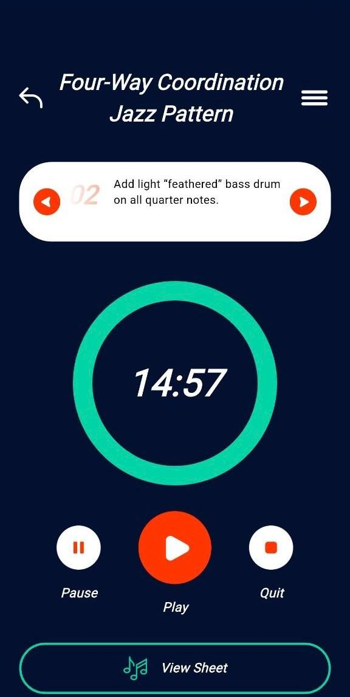
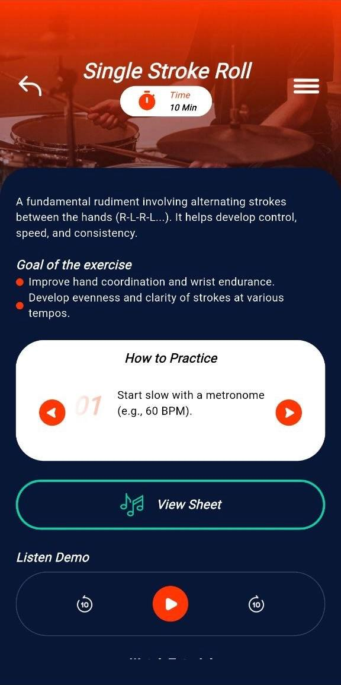
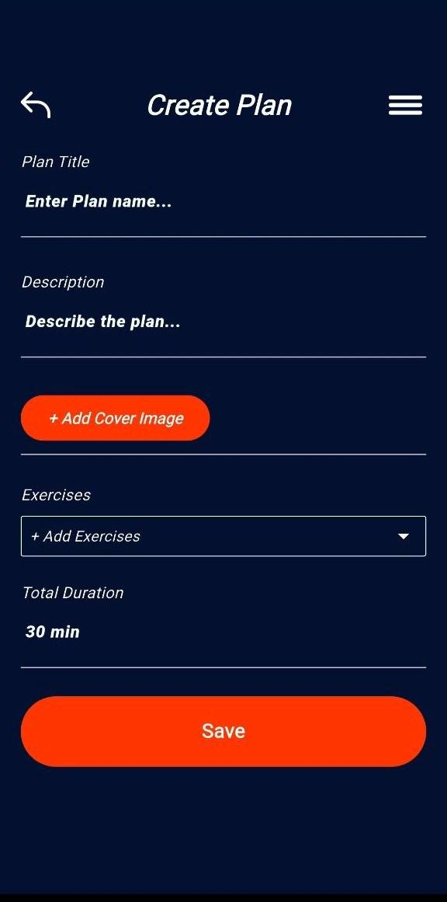
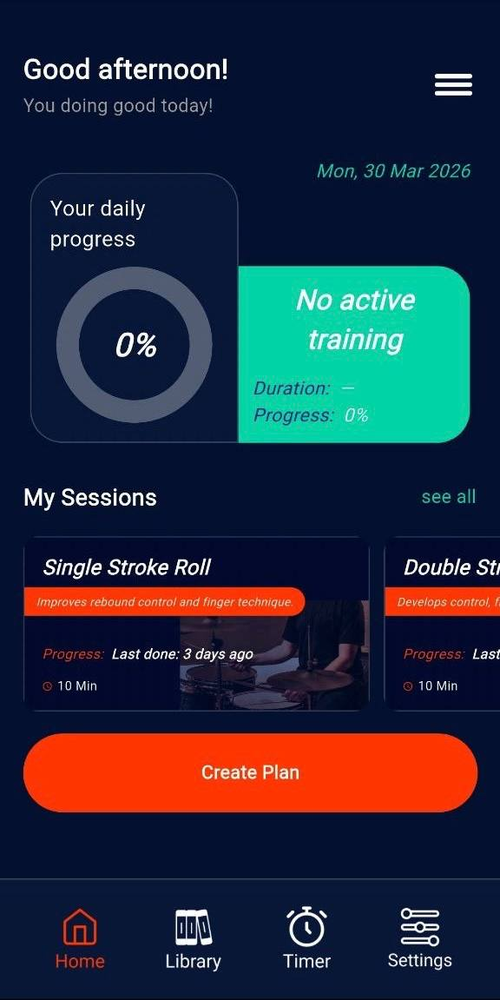
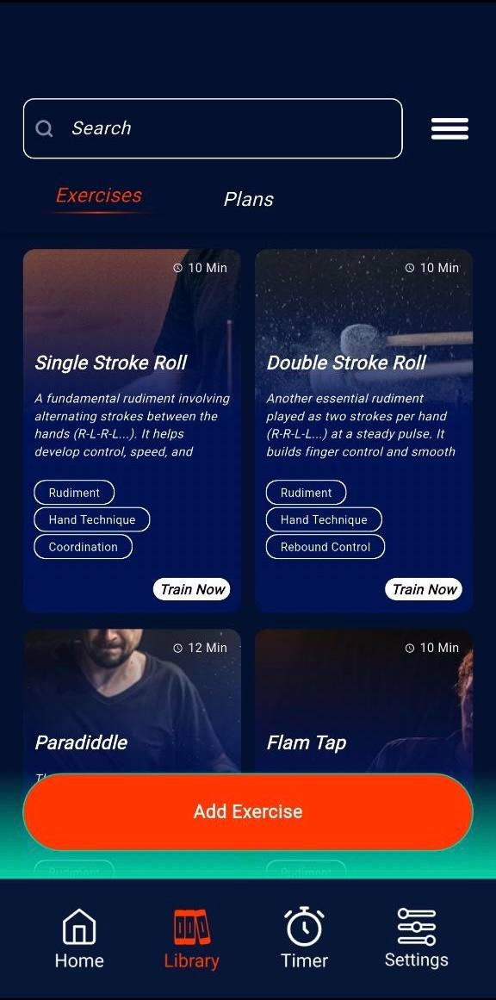
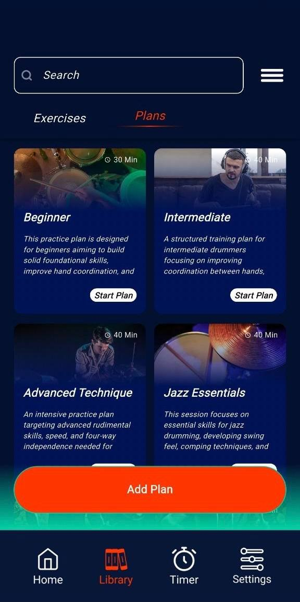
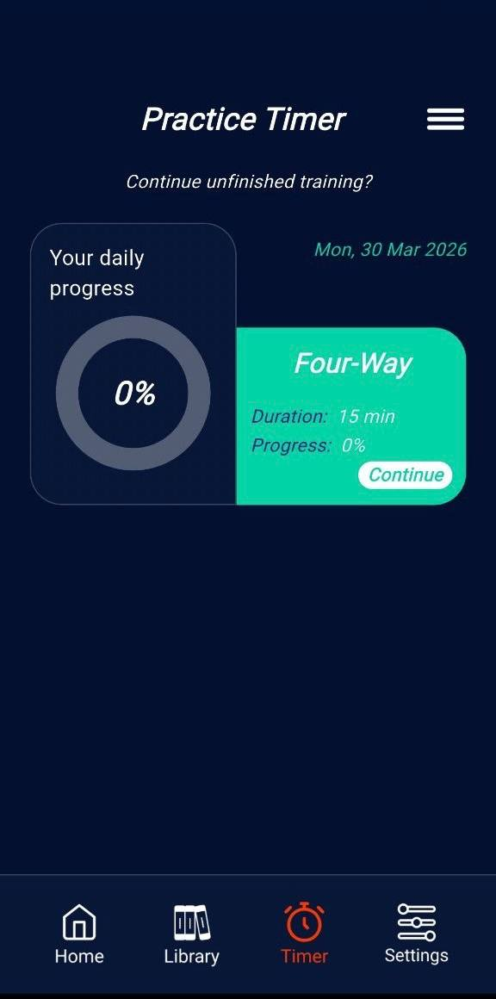

Rhythm training app
Exercises · Plans · Timer · Progress
Practice with structure. Build control, speed, timing, and consistency.
1x Drum Practise Journal is built for drummers who want a more organized routine. Create focused practice plans, explore core exercises, follow guided sessions, use a dedicated timer, and keep your daily progress visible in one mobile system.


Practice plans
Build custom sessions with title, description, cover image, and exercises.
Focused timer
Keep one exercise active and move through training with a dedicated rhythm timer.
A drumming practice product should feel like a rehearsal studio, not a generic tracker.
Main features
Core product structure
Daily progress dashboard
Users can open the app and immediately see session progress, current date, and training status without digging through extra screens.
Exercise library
Rudiments and training drills are grouped inside a visual library with cards, tags, timing, and training entry points.
Plan creation
The app includes a custom plan builder where drummers can define session title, description, cover image, exercises, and total duration.
Guided exercise detail
Exercise screens explain the goal, practice method, sheet view, demo, and tutorial support in a focused learning layout.
Practice timer mode
Active training can continue inside a full-screen timer environment with control buttons and one-task concentration.
Session progression
From simple stroke rolls to longer jazz coordination plans, the app keeps training organized in steps and sequences.
App workflow
01
02
03
04
05
06
How the experience moves from welcome screen to active practice
Welcome
The first screen is simple, bold, and immediately musical.
Dashboard
Progress and sessions stay visible without clutter.
Create plan
Session building is part of the product, not outside of it.
Library
Exercises and longer plans live in one searchable zone.
Plan details
Longer practice blocks remain readable and structured.
Active timer
Practice becomes measurable and continuous in real time.
Current focus
Brand-led welcome
The opening screen sets the musical tone first and introduces the app as a focused drum practice companion.
Integrated screens
Visual showcase
Home screen with progress emphasis
The dashboard combines daily progress, date state, active training visibility, session cards, and fast entry into plan creation.

Custom plan builder
Practice plans can be assembled with cover image, exercise selection, description, and total duration.

Exercise detail screen
Users can review the objective, practice instructions, sheet access, and demo support before starting.

Exercise & plan library
The library view makes drills and full plans feel like an organized training catalog instead of a flat list.
Advanced plan breakdown
Longer sessions such as jazz essentials are broken into timed modules that feel more instructional and intentional.

Full practice timer
The dedicated timer mode creates a focused training environment with fewer distractions and clearer execution.

Product feel
What the app experience communicates
★★★★★
“It feels like an actual practice system because drills, plans, and timer mode all support the same routine instead of behaving like separate tools.”
★★★★★
“The timer and detailed exercise screens make the app feel useful during real rehearsal, not only while browsing.”
★★★★★
“The visual structure is clear: home, library, plans, and timer all have a purpose, and the app keeps momentum intact.”
Download
Start building a more structured drumming routine
Use 1x Drum Practise Journal to organize exercises, assemble practice plans, study guided sessions, and run focused timer-based rehearsal blocks inside one mobile workflow.